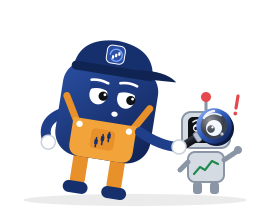

Реально ли преимущество вашего бота?
Независимые бэктесты и проверка торговой истории для торговых ботов на крипте, Forex, золоте и нефти. Мы прогоняем вашу стратегию или историю сделок на реальных рыночных ценах с реальными комиссиями и издержками и прямо говорим, держится ли прибыль.
- Крипта, Forex, золото и нефть
- Любые монеты на ваш выбор
- 1-секундные свечи для тестов до 1 месяца
- Лучший, обычный и худший сценарий
- PASS · CAUTION · FAIL
- Проверка по QR-коду

Что мы проверяем
Бэктест стратегии
Отправьте свою стратегию Freqtrade, TradingView Pine Script или MetaTrader 5. Она автоматически запускается на многолетних данных по 20+ монетам или Forex с реальными комиссиями и стресс-тестом комиссий.
Проверка торговой истории
Вам показали список сделок, которые якобы были совершены? Мы сверяем каждый вход и выход с реальными ценами с точностью до секунды и отмечаем цены, которых никогда не было.
Проверка на заглядывание в будущее
Многие стратегии выглядят отлично только потому, что подглядывают в свечи, которых не могли видеть в реальной торговле. Для стратегий Freqtrade мы запускаем lookahead-тест и прямо говорим, если это так.
Ваши монеты, с точностью до секунды
Тестируйте на наших 20 основных монетах или назовите монеты, которыми торгуете. Нужно больше деталей? Для тестов до 1 месяца мы можем прогнать стратегию на 1-секундных свечах. Свои монеты и 1-секундные прогоны занимают больше времени.
Три результата, а не один
Реальная торговля никогда не бывает такой гладкой, как бэктест. В каждом отчёте — оптимистичный, обычный и пессимистичный результат и факторы, которые на них влияют: исполнение ордеров, проскальзывание, комиссии и рынок.
А также Forex, золото и нефть
Продаёте или покупаете советник (EA) для MetaTrader или Forex-сигнал? Пришлите историю сделок (экспорт из MetaTrader 5 подходит как есть), и мы сверим каждый вход и выход с реальными ценами bid и ask той минуты — для валютных пар Forex, золота, серебра, нефти и основных индексов. Или пришлите сам советник MetaTrader 5: он запускается в тестере стратегий MetaTrader на наших ценах.
Отчёт, который невозможно подделать
В каждом отчёте есть QR-код и ссылка для проверки. Любой, кому вы его покажете, может убедиться на нашем сайте, что вердикт и цифры выданы именно нами.
Как это работает
Отправьте файл
Выберите тип теста и период, затем отправьте стратегию или историю сделок. Укажите, будет ли результат публичным, анонимным или закрытым.
Получите отчёт
PDF с Edge Score, графиками, результатами по годам и рыночным условиям и всеми найденными красными флагами.
Из витрины
Популярные бесплатные стратегии, протестированные как есть, с настройками по умолчанию. Все результаты и как их читать →
С вашим ботом всё иначе. Платные, приватные или тщательно настроенные стратегии — именно то, ради чего мы работаем. Узнайте, чего стоит ваш бот, прежде чем доверить ему реальные деньги: протестируйте бесплатно в Telegram.